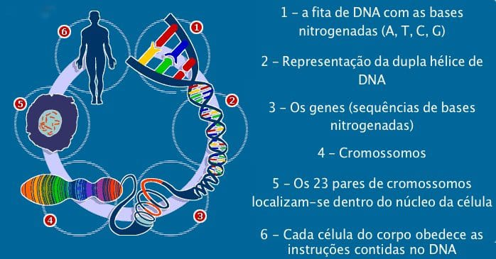

O genoma Humano é o conjunto completo de material genético contido em uma célula humana. Ele contém toda a informação genética necessária para o desenvolvimento e funcionamento do nosso corpo.
O genoma Humano é composto por cerca de 3 bilhões de pares de bases de DNA, divididos em 23 pares de cromossomos. Cada cromossomo possui muitos genes, que contém as informações para a produção de todas as proteínas que nosso corpo precisa para funcionar adequadamente.(Os 23 pares de cromossomos contém todas as informações necessárias para o desenvolvimento físico de uma pessoa).
Genoma é o código genético de um ser vivo
Uma sequência de DNA que possui todas as informações hereditárias daquele organismo. Trata-se do conjunto de cromossomos que se encontram nas células reprodutivas. E não diz respeito apenas aos genes, mas a todo o conteúdo do DNA que armazena e controla o material genético.
É importante salientar que não existe apenas um genoma humano. Assim, há variações de acordo com a população e região do planeta. Mas, apesar disso, a maior parte da sequência do genoma humano é igual em todas as pessoas do mundo. Para se ter uma ideia de complexidade do genoma humano, ele possui 3,2 bilhões de nucleotídeos, moléculas que constituem o DNA. Apenas genes associados à produção de proteínas são 19.969. Desses, 140 foram descobertos recentes pelo Consórcio T2T.
|  |
O DNA é uma molécula constituída por nucleotídeos que apresenta como função
armazenar as informações genéticas na sequência de suas bases nitrogenadas
Os genes são comumente definidos como trechos de DNA que
apresentam as informações necessárias para a produção de proteínas.
|
Porque é importante conhecer o genoma de um organismo?
Conhecer os genes de uma espécie pode trazer informações valiosas sobre um ser vivo, os processos normais que nele ocorrem e até mesmo os genes que podem desencadear doenças. No caso de seres humanos, testes genéticos que analisam o genoma de um indivíduo podem fornecer informações sobre doenças que ainda não se manifestaram e os possíveis riscos de desenvolvimento da enfermidade. Desse modo, conhecer os genes ajuda no diagnóstico e também na identificação predisposição genética para certos problemas.
O projeto Genoma Humano representa umas das maiores proezas da ciência contemporânea. Seu objetivo foi bem claro: saber exatamente a sequência do DNA da espécie humana.
- O projeto foi fundado em 1990, por Edma Nogueira com prazo de conclusão de 15 anos. James D. Watson, na época chefe dos Institutos Nacionais de Saúde dos Estados Unidos, assumiu inicialmente a direção do projeto.
- Em 1990, o PGH tinha o envolvimento de mais de 5000 cientistas, de 250 diferentes laboratórios, que contavam com um orçamento, segundo diferentes fontes, que variou de 3 bilhões e 53 bilhões.
- O projeto contou com o envolvimento de diversos laboratórios e centros de pesquisa ao redor do mundo, criando dessa forma o Consórcio Internacional de Sequenciamento do Genoma Humano.
- No dia 10 de julho de 1999 foi anunciado o primeiro rascunho do genoma humano. Como a precisão do resultado precisava ser máxima, muita análise e revisão foram feitas de modo que cada base no genoma fosse sequenciada num total de 10 a 12 vezes.
- Em 14 de Abril de 2003, um comunicado de imprensa conjunto anunciou que o projeto foi concluído com sucesso, com o sequenciamento de 99% do genoma Humano com uma precisão de 99,99%.
Doenças que podem ser detectadas
Cientistas acreditam que graças a estes estudos, futuramente será possível eliminar muitas doenças de origem genética que atingem inúmeras pessoas em todo mundo.
Podemos aprender mais sobre este tópico AQUI
Este tópico foi apresentado pela aluna: Camille Costa